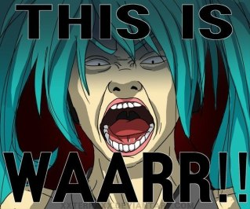

Шутки для трио Ульяна, Алиса, Семен.
Страница 22 из 40 •  1 ... 12 ... 21, 22, 23 ... 31 ... 40
1 ... 12 ... 21, 22, 23 ... 31 ... 40
Re: Шутки для трио Ульяна, Алиса, Семен.
автор peregarrett в Вт 4 Ноя 2014 - 1:00

peregarrett- Находка для шпиона

- Сообщения : 3264
Дата регистрации : 2014-09-07
Возраст : 36
Re: Шутки для трио Ульяна, Алиса, Семен.
автор Гость в Вт 4 Ноя 2014 - 1:00
Мы уже с полчаса сидели на полу. Все тело затекло и ужасно хотелось схлдить по нужде. Существование становилось невыносимым.
- Эй, начальник, а поесть нам дадут?- крикнула Ульяна.
Лена вздрогнула, чуть не выронив фомку.
- Не знаю,- пожала плечами она,- Хотя щас, подожди.
Лена начала рыться в карманах рубашки и достала оттуда помятую булку с изюмом.
- Ничего другого нет, а из-за вас,- Лена подчеркнула это слово, одарив нас с Алисой ледяным взглядом,- Из-за вас я искать ключи в столовую не собираюсь.
- Как со связанными руками есть прикажешь?- язвительно спросила Ульяна.
- А по нужде сходить можно?- вставил слово я,- Чай, не в концлагере.
- Да и почему мы на полу сидим? А если простудимся?- подала голос Алиса.
Лена, похоже, совсем запуталась, но тут вошла Мику.
- Чего орете? На пол-лагеря вас слышно, наверное.
- Лена нам есть не дает и по нужде не выпускает!- крикнул я.
- И чего мы связанные сидим на холодном полу?- поддержала Алиса.
- А как еще-то? Убежите же.
- Зачем? Смена же завтра кончается,- удивилась Ульяна. От напоминания о конце смены под сердцем вновь заныло.
Мику задумалась.
- Ладно. Кто хочет сходить по нужде - выходите по одному. Подстелить вам, правда, нечем. Но у меня тут в подсобке есть несколько табуреток, сядете на них!
Лена открыла было рот, но тут же закрыла. Видимо, поняла, что возразить нечего.
Мику поочередно развязала и вывела нас на улицу, а затем выдала табуретки. Жизнь явно налаживалась.
Несколько минут мы молчали и меня вновь стали посещать мысли о будущем после лагеря.
Вариантов тут два - либо я возвращаюсь обратно... Ведь тогда, у склада, перед тем, как в меня врезалась Алиса, я чуть не вернулся, я наполовину уже был в том ЛиАЗе! Впрочем, с чего бы мне возвращаться сейчас? Это тогда мне казалось, что я все запорол, а сейчас все же хорошо! Я люблю Алису, Алиса любит меня...
А второй вариант не лучше первого. Я остаюсь. Здесь, где у меня нет ни вещей, ни документов, вообще ничего! И куда мне? Загребут в ментовку, если скажу правду - в психушку, если не скажу, то наверняка в места не столь отдаленные.
Я застонал от безысходности.
- Семен, ты чего?- удивленно спросила Алиса.
- Да так...- слабо махнул рукой я,- Все думаю, что потом-то будет.
- Ты про завтрашний выговор, выгон из лагеря и прочее?
- Да нет. Я про то, что будет после лагеря,- сделал я ударение на слове "после",- Мы ведь... расстанемся.
Алиса немного помедлила, а потом горестно вздохнула.
- Я тоже об этом думала... Даже не знаю, что будет потом. Ну то есть знаю, но приблизительно. Ты в армию пойдешь, все такое... Два года ждать.
Все было гораздо сложнее, но говорить об этом я пока не стал. Девушка итак совсем раскисла.
- Ладно, давай подумаем об этом после,- поспешил успокоить ее я. Она ничего не ответила, лишь обняла меня и уткнулась носом в плечо.
Мы сидели так довольно долго. Я огляделся по сторонам. Ульянка дремала, Лена поигрывала фомкой и усиленно старалась не смотреть на нас. Мне ее даже немного жаль. Все-таки чувствительный человек и все такое, а тут мечты разрушены и все такое...
- Семен, у нас же все будет хорошо?- спросила Алиса, подняв голову.
- Конечно будет,- прошептал я.
(ПРИМЕЧАНИЕ: Дальше поцелуй, объятия, все такое... Насчет описания идей нет, по крайней мере сейчас. Извините)
- Семен...- неожиданно раздался голос Лены.
Я мягко отстранил Алису и повернулся к Лене. Она стояла рядом, все акже поигрывая фомкой. Голову она немного опустила, да к тому же было темно и выражения лица я разглядеть не смог.
- В общем... Зря ты так.
- Как?- не понял я.
- Подло, Семен, подло,- спокойно ответила Лена,- Зря ты тогда меня так обманул, когда пообещал сходить со мной. И в первый день... тоже. (АХТУНГ! ВТОРОЕ ПРЕДЛОЖЕНИЕ, ТОЛЬКО ЕСЛИ В ПЕРВЫЙ ДЕНЬ СЕМЕН СКАЗАЛ, ЧТО ЛЕНА ЕМУ НРАВИТСЯ, А ПОТОМ СВЕЛ ВСЕ В ШУТКУ)
Я не успел среагировать. Лена кинулась вперед и фомка воткнулась в стул между моих ног в сантиметре от... Ну вы поняли.
Я заорал и свалился в сторону вместе с табуретом, слыша, как визжат Алиса и Ульяна. Вскочив и развернувшись, я увидел, как Алиса, скуля, сжимает окровавленную ладонь, а Ульяна убегает куда-то в угол. А Лена вновь повернулась ко мне. На лице ее сверкала безумная улыбка.
- Так не доставайся же ты никому!- взвизгнула она, вновь кидаясь ко мне. Я вновь заорал, срывая голосовые связки, отскочил, споткнулся обо что-то и рухнул на барабанную установку, смяв ее и несколько раз крепко ударившись головой.
Помещение наполнилось голосами, топньем, надо мной кто-то склонился... Но я почти ничего уже не видел, лишь чувствовал пульсирующую боль в затылке.
Меня посадили и я, оклемавшись на секунду, увидел бегающих Славю, Женю и Мику, Ольгу Дмитриевну, что-то важно говорящего физрука, кричащую Ульяну... Но больше всего мне запомнились сидящая на полу Лена, спрятавшая лицо в руки и мелко дрожащая, и плачущая Алиса, склонившаяся надо мной, трогающая мою голову и пачкающую ее чем-то липким, пока ее наконец не отстранила Виола.
И тогда сознание покинуло меня.
Последний раз редактировалось: Zerg (Вт 4 Ноя 2014 - 1:03), всего редактировалось 1 раз(а)
Гость- Гость
Re: Шутки для трио Ульяна, Алиса, Семен.
автор Chess в Вт 4 Ноя 2014 - 1:01
Это у меня говорит осознание, во что сей "милый ребёнок" может превратиться. Она уже "такая", просто сама не понимает этого.peregarrett пишет:Chess, это у вас личное неприятие против Леночки говорит. У нас она еще пока не такая.

Chess- Находка для шпиона
- Сообщения : 3798
Дата регистрации : 2014-10-05
Откуда : Город на краю света
Re: Шутки для трио Ульяна, Алиса, Семен.
автор peregarrett в Вт 4 Ноя 2014 - 1:02
Браво!
peregarrett- Находка для шпиона
- Сообщения : 3264
Дата регистрации : 2014-09-07
Возраст : 36
Re: Шутки для трио Ульяна, Алиса, Семен.
автор Гость в Вт 4 Ноя 2014 - 1:06
Гость- Гость
Re: Шутки для трио Ульяна, Алиса, Семен.
автор Гость в Вт 4 Ноя 2014 - 1:07
Гость- Гость
Re: Шутки для трио Ульяна, Алиса, Семен.
автор Chess в Вт 4 Ноя 2014 - 1:08
Но вообще оченно неплохо. Я бы даже сказал - здорово.
Chess- Находка для шпиона
- Сообщения : 3798
Дата регистрации : 2014-10-05
Откуда : Город на краю света
Re: Шутки для трио Ульяна, Алиса, Семен.
автор Гость в Вт 4 Ноя 2014 - 1:08
Варианты:
- Извини, десу... (0)
- Ты мне ещё за Цусиму не ответила! (+2ХП)
Гость- Гость
Re: Шутки для трио Ульяна, Алиса, Семен.
автор Chess в Вт 4 Ноя 2014 - 1:09
- Отомсти мне сеппуку! Вот и ножик, из столовой упёр. (+5 ХП)Макс Ветров пишет:По Мику: После диверсии в музклубе (на полднике) она отлавливает Семена и пытается с ним поговорить. В своей манере, явно нервничая, но общий смысл такой: "зачем ты так со мной? Я просто хотела дружить! Я вся такая кавайная, а ты..."
Варианты:
- Извини, десу... (0)
- Ты мне ещё за Цусиму не ответила! (+2ХП)
Chess- Находка для шпиона
- Сообщения : 3798
Дата регистрации : 2014-10-05
Откуда : Город на краю света
Re: Шутки для трио Ульяна, Алиса, Семен.
автор peregarrett в Вт 4 Ноя 2014 - 1:10
Chess, лол!
peregarrett- Находка для шпиона
- Сообщения : 3264
Дата регистрации : 2014-09-07
Возраст : 36
Re: Шутки для трио Ульяна, Алиса, Семен.
автор Гость в Вт 4 Ноя 2014 - 1:11
Не слишком ли жестокий выбор? Мику ж вроде в целом положительный персонаж, нельзя ли, например, сдеать так, чтобы за извинение был -1ХП или добавить вариант, дающий -ХП.Макс Ветров пишет:По Мику: После диверсии в музклубе (на полднике) она отлавливает Семена и пытается с ним поговорить. В своей манере, явно нервничая, но общий смысл такой: "зачем ты так со мной? Я просто хотела дружить! Я вся такая кавайная, а ты..."
Варианты:
- Извини, десу... (0)
- Ты мне ещё за Цусиму не ответила! (+2ХП)
Гость- Гость
Re: Шутки для трио Ульяна, Алиса, Семен.
автор Гость в Вт 4 Ноя 2014 - 1:11
Гость- Гость
Re: Шутки для трио Ульяна, Алиса, Семен.
автор Гость в Вт 4 Ноя 2014 - 1:12
Вот и ножик, у Леночки уперChess пишет:
- Отомсти мне сеппуку! Вот и ножик, из столовой упёр. (+5 ХП)
Гость- Гость
Re: Шутки для трио Ульяна, Алиса, Семен.
автор Chess в Вт 4 Ноя 2014 - 1:14
Леночкины ножики лучше не трогать, есть отличные от нуля шансы по этапу пойти.Zerg пишет:Вот и ножик, у Леночки уперChess пишет:
- Отомсти мне сеппуку! Вот и ножик, из столовой упёр. (+5 ХП)
"Сколько я зарезал, сколько перерезал..." (с)
Chess- Находка для шпиона
- Сообщения : 3798
Дата регистрации : 2014-10-05
Откуда : Город на краю света
Re: Шутки для трио Ульяна, Алиса, Семен.
автор Гость в Вт 4 Ноя 2014 - 1:14
- Я ненавижу аниме!
- Смерть попсе!
- Отвали косоглазая
- МВАХАХАХАХАХАХА
Гость- Гость
Re: Шутки для трио Ульяна, Алиса, Семен.
автор peregarrett в Вт 4 Ноя 2014 - 1:15
Если делать выбор между "надышать кибернетиков" и "выгулять Лену", тогда получается, что во времясвиданки с Леной пропадают +ХП от Жени - вместо этого Алиса и Улька устраивают прикол Семе с Леной.
peregarrett- Находка для шпиона
- Сообщения : 3264
Дата регистрации : 2014-09-07
Возраст : 36
Re: Шутки для трио Ульяна, Алиса, Семен.
автор Chess в Вт 4 Ноя 2014 - 1:16
"Тёмные, сэ-э-эр." (с)Тьфу на вас, опять сплошное "вскрытие" пошло.
Но, как обычно, из тёмного бреда многое будет
Последний раз редактировалось: Chess (Вт 4 Ноя 2014 - 1:17), всего редактировалось 1 раз(а)
Chess- Находка для шпиона
- Сообщения : 3798
Дата регистрации : 2014-10-05
Откуда : Город на краю света
Re: Шутки для трио Ульяна, Алиса, Семен.
автор Гость в Вт 4 Ноя 2014 - 1:17
Гость- Гость
Re: Шутки для трио Ульяна, Алиса, Семен.
автор Гость в Вт 4 Ноя 2014 - 1:18
Гость- Гость
Re: Шутки для трио Ульяна, Алиса, Семен.
автор Chess в Вт 4 Ноя 2014 - 1:18
А ведь может и взбеситься...Макс Ветров пишет:Не, вариант предложить сделать Мику сепуку зачетный. Не берусь предсказать её реакцию...
Chess- Находка для шпиона
- Сообщения : 3798
Дата регистрации : 2014-10-05
Откуда : Город на краю света
Re: Шутки для трио Ульяна, Алиса, Семен.
автор Гость в Вт 4 Ноя 2014 - 1:20

Гость- Гость
Re: Шутки для трио Ульяна, Алиса, Семен.
автор Chess в Вт 4 Ноя 2014 - 1:22
Chess- Находка для шпиона
- Сообщения : 3798
Дата регистрации : 2014-10-05
Откуда : Город на краю света
Re: Шутки для трио Ульяна, Алиса, Семен.
автор peregarrett в Вт 4 Ноя 2014 - 1:23
Такое предложение
Если продинамил свиданку с Леной - +2 ХП. Если пошел - +1 ХП за гондон с водой, кинутый ДваЧе. Свиданка при этом быстро сворачивается
Если у Мику в клубе ограничился мафоном - +1 ХП, если испортил рояль - +3 ХП, рояль - вещь дорогая.
Если оборжал Женю в клубе - +2 ХП, если прогнал про "а если это любовь, Ольга Дмитриевна?" - всего лишь +1 ХП и романтик-линия Эл+Женя в будущем.
peregarrett- Находка для шпиона
- Сообщения : 3264
Дата регистрации : 2014-09-07
Возраст : 36
Re: Шутки для трио Ульяна, Алиса, Семен.
автор Гость в Вт 4 Ноя 2014 - 1:28
У Мику - согласен, но вариант с разговором в полдник тоже добавь! Эпично же!
По Элу/Жене - согласен, но ХП должно быть с избытком а не впритык (чтобы можно было и на гуд уйти и романтик линию Эла и Жени сделать).
И ещё. Я так понимаю, если идти на свидание с Леной, уход на романтик-рут с Алисой невозможен (без оглядки на ЛП)?
Гость- Гость
Re: Шутки для трио Ульяна, Алиса, Семен.
автор Chess в Вт 4 Ноя 2014 - 1:30
Вай нот? Или Леночку затроллить нельзя? Например, над рисунками её посмеяться?И ещё. Я так понимаю, если идти на свидание с Леной, уход на романтик-рут с Алисой невозможен (без оглядки на ЛП)?
"- А-а-а, так это ты это убожество рисуешь?" ну и далее по тексту.
Последний раз редактировалось: Chess (Вт 4 Ноя 2014 - 1:32), всего редактировалось 1 раз(а)
Chess- Находка для шпиона
- Сообщения : 3798
Дата регистрации : 2014-10-05
Откуда : Город на краю света
Страница 22 из 40 • 1 ... 12 ... 21, 22, 23 ... 31 ... 40